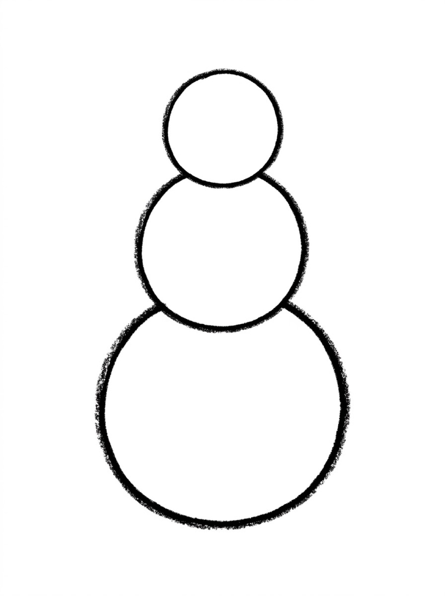
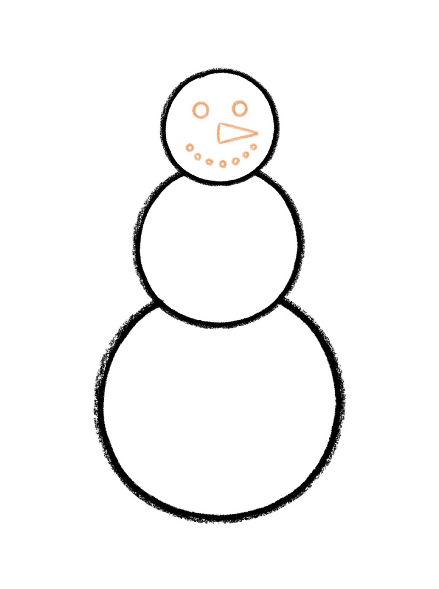
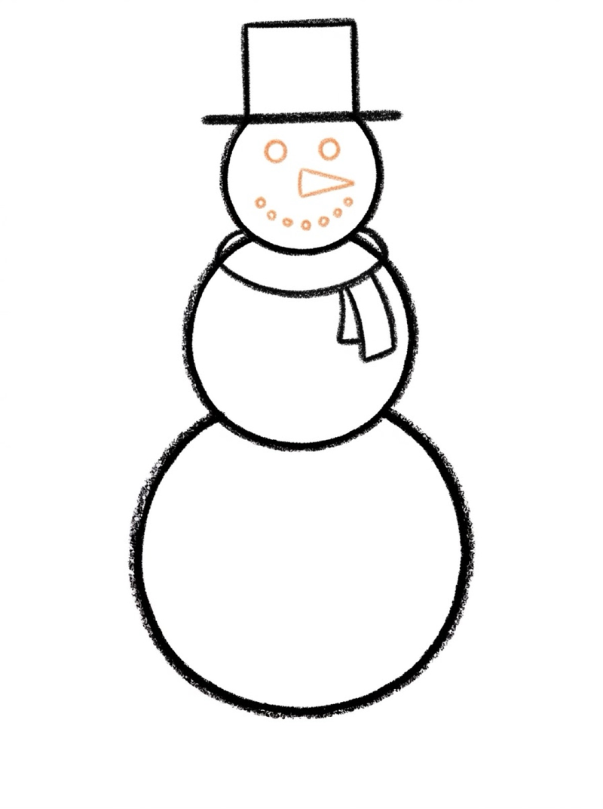
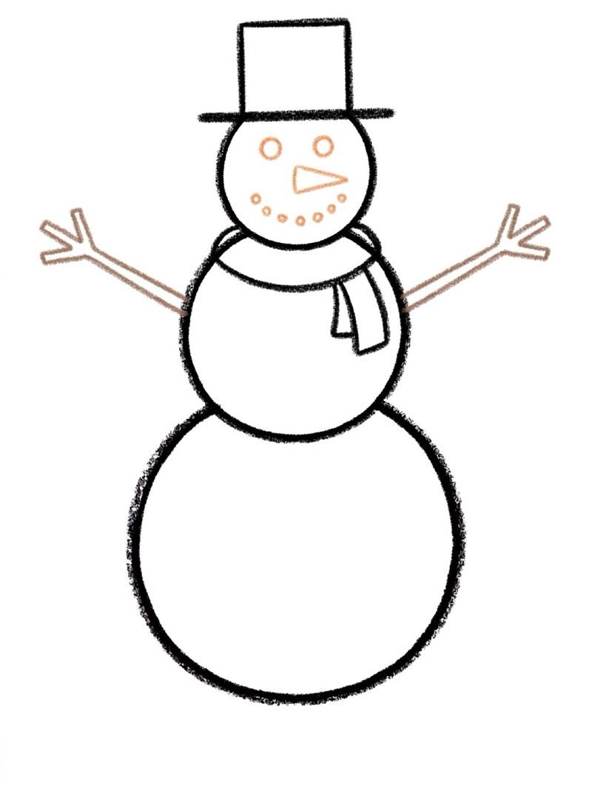
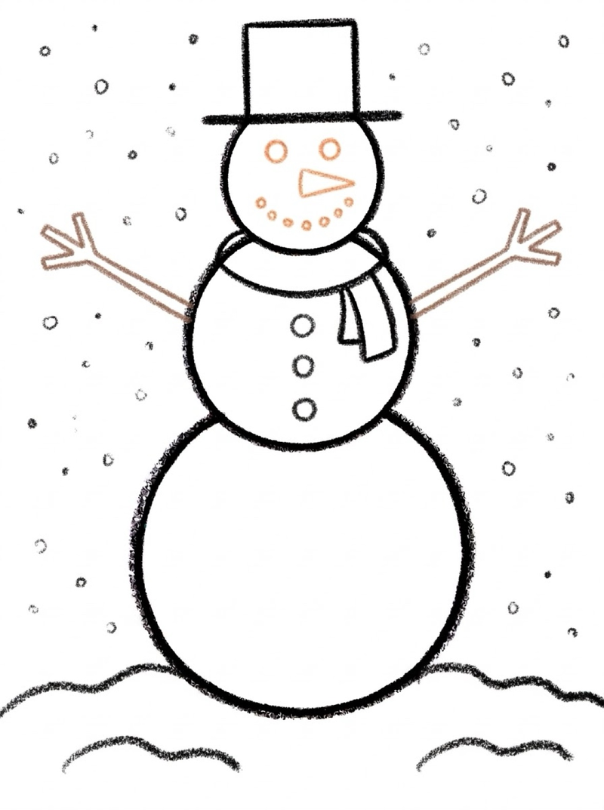
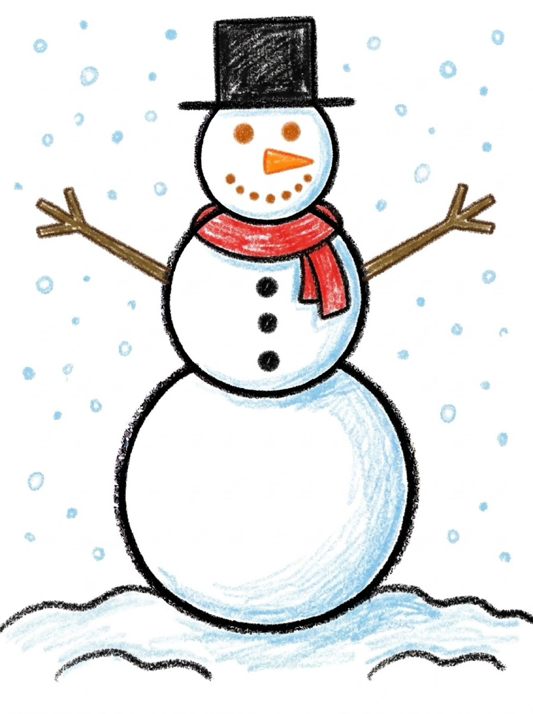

Snowman Drawing for Kids How to Draw a Snowman in 6 Easy Steps
Quick Answer
This free step-by-step tutorial shows kids how to draw a snowman in six easy steps: stacked snowballs, a friendly face, a hat and scarf, stick arms, buttons and snow, and color. Download the printable PDF, grab crayons, and follow along together. Made for ages 3 and up — no signup needed, just print and draw.
At a Glance
- Subject: How to draw a snowman
- Ages: 3+
- Steps: 6 steps
- Time: ~20 min
- Difficulty: Easy
- Supplies: Paper, crayons
The snowman is winter's friendliest drawing — three circles and every kid already knows the shape. The accessories are where the personality lives: the hat, the scarf, the carrot nose. It's the rare tutorial where kids argue over whose snowman looks happiest.
✏️ How to Draw a Snowman: Step by Step
One step per box — draw each new part in a different color so kids can see exactly what changed.
Step 1: The Snowballs

Draw three stacked circles — big at the bottom, medium in the middle, small on top. They touch each other like a snowman melting upward.
Step 2: The Face

On the top circle, add two dot eyes, a triangle carrot nose pointing sideways, and a smile made of small dots. Dot smiles look like real coal smiles.
Step 3: The Hat and Scarf

Draw a top hat on the very top — a rectangle with a wider brim — and a scarf wrapped between the head and middle circle, with two ends hanging down.
Step 4: The Arms

Add stick arms on the middle circle — simple lines angling out with three tiny finger twigs at each end.
Step 5: The Buttons and Snow

Draw three round buttons down the middle circle and a bumpy snow mound under the snowman. A few falling snow dots in the sky finish it.
Step 6: Color It In

Color your snowman! Orange carrot nose, red scarf, black hat and buttons. Leave the snow white — or add light blue shading.
📊 Snowman Drawing by Age
Every age can join in — just adjust the job.
| Age | What they can do | Tip |
|---|---|---|
| 3–4 | Trace the three circles on the printable | Draw the hat for them — rectangles on curves are hard |
| 4–5 | Follow all 6 steps with a little help | The dotted smile is great fine-motor practice |
| 6+ | Draw solo and add their own details | Challenge: draw a snowman melting (droopy!) |
🖨️ Download Your Free Snowman Drawing Printable
The printable lays out all 6 steps one per box, big enough for little hands — kids draw right alongside each step. This printable snowman is free to print again and again.
⬇️ Open Free Printable 🖨️ Print🎁 Free printable for ages 3+
⛄ Snowman Family Challenge
Draw three snowmen side by side — a big one, a medium one, and a tiny one. Give each a different hat: top hat, beanie, earmuffs. Comparing sizes builds proportional thinking, and the different hats make each snowman feel like a character with a personality.
What You'll Need to Draw a Snowman
Grab crayons or markers — the snowman himself is mostly white, so the accessories do the color work. Orange for the carrot nose, red for the scarf, black for the hat and buttons, brown for stick arms. A light blue crayon for snow shading is a nice touch. Standard printer paper works fine.
What They're Learning
This snowman tutorial practices circles in three sizes — stacking them big-to-small teaches size ordering and balance. The dotted smile is excellent fine-motor practice since each dot needs controlled pressure. Wrapping the scarf between the circles (not floating above them) builds an understanding of how objects connect in a drawing.
Make It Yours
Once the basic snowman is done, try these twists: swap the top hat for a striped beanie, add earmuffs instead of a hat, or draw the snowman holding a broom. Kids can also build a whole snowy scene — snowflakes falling, a snow dog next to the snowman, footprints trailing behind. A melting snowman (droopy and lopsided) is always hilarious.
🛒 Our Favorite Drawing Supplies
These are the supplies we reach for in our own home — washable (because kids), quality paper, and enough colors to avoid fights.
As an Amazon Associate, MomYouNeedThis earns from qualifying purchases — at no extra cost to you.
💡 Snowman Drawing Tips for Parents
The three stacked circles are the foundation — the bottom one biggest, the top one smallest. If your child draws them all the same size, it still reads as a snowman, but the graduated sizes look better. The carrot nose is the detail kids care about most: orange, pointing sideways, right in the middle of the face. Let them color it bright orange — it's the snowman's signature.
Two things that help with every snowman drawing attempt: let them pick the colors (a blue snowman is still a snowman), and don't fix their drawing. If they ask for help, draw on a separate piece of paper, not on theirs. Kids who feel ownership of their drawing come back for the next one; kids who feel corrected stop trying. The goal is a snowman they're proud of, not a perfect one.
❓ Snowman Drawing FAQs
What is the easiest way for a kid to draw a snowman?
Stack three circles from big to small, then add a dot-eye face with a triangle carrot nose. Top it with a hat, wrap on a scarf, add stick arms and buttons. Circles do all the work.
What age can kids start learning to draw a snowman?
Most kids can follow the stacked-circle method around age 3 with a grown-up helping, and draw one on their own by ages 4 to 5. Younger children can trace the circles on the printable.
What supplies do we need to draw a snowman?
Just paper and crayons or markers. The free printable PDF lays out all six steps one per box so kids can draw right alongside each step. Orange, red, and black are the key colors.
Is the snowman drawing printable really free?
Yes — every printable on MomYouNeedThis is 100% free to download and print. No signup, no payment, just tap the download button.
How do I print the snowman drawing tutorial?
Open the PDF and print at 100% scale (not 'fit to page') so the drawing boxes stay big enough for little hands. The printable is designed to stay large — never shrunk to force a fit.
📚 Keep Exploring
- ✏️ All Drawing Tutorials 76 free step-by-step drawing tutorials for kids.
- 🐾 Animal Coloring Free printable animal coloring pages for little learners.
- ✏️ Drawing Practice Free printable drawing pre-writing worksheet for toddlers.